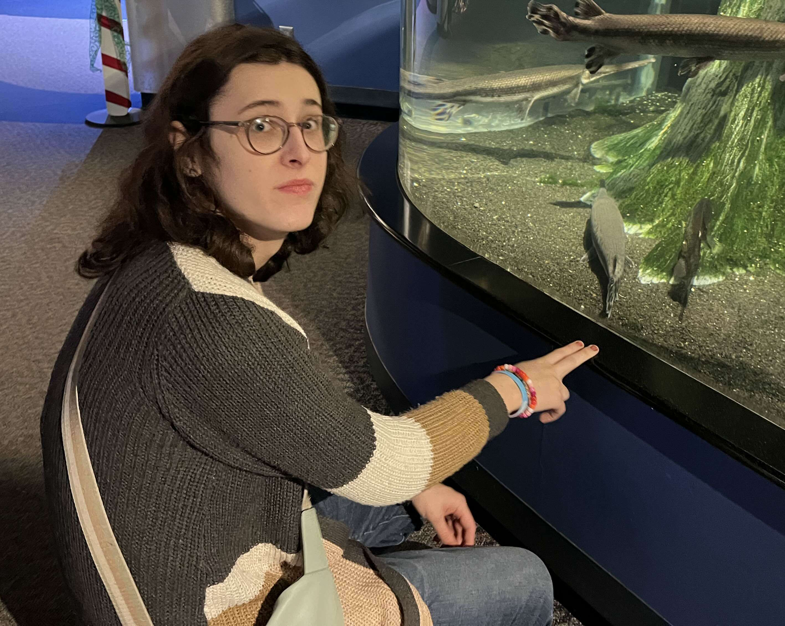

Skylar Harrison

About Me
Dedicated professional with hands-on experience in data analysis, technical support, and software development. Proven track record of utilizing virtual reality for education, conducting research studies, and improving performance through automation tools. Skilled in Python, R, and SQL.
Skills
- Programming Languages: Python, R, SQL, Java, JavaScript, C#, C++, HTML
- Tools & Technologies: MongoDB, Docker, Excel, RStudio, Artificial Intelligence, Unity
- Soft Skills: Data Analytics, Problem-Solving, Management, Teaching, Database Management, Communication
Education
East Carolina University
Bachelor of Science in Computer Science (2019 – 2023)
East Carolina University
Master’s in Data Science (2024 – 2026)
Work Experience
East Carolina University – Office of Global Affairs
Graduate Assistant (Nov 2024 – Present)
East Carolina University – Computer Science Department
Undergraduate Assistant (May 2023 – Dec 2023)
East Carolina University – Geological Science Department
Researcher / Developer (Jan 2023 – Dec 2023)
East Carolina University – Office of Global Affairs
Technical Support Assistant (Aug 2022 – Apr 2023)
Vidant Medical Center
Performance Analyst (Jun 2019 – Oct 2020)
Publications
Turtle VR: Virtual Reality Field Experience for Geological Engineering Education Enhancement
IEEE Frontiers in Education Conference (FIE), 2024
Contact Information
Email: skylarharrison251@gmail.com
LinkedIn: linkedin.com/in/skylar-harrison